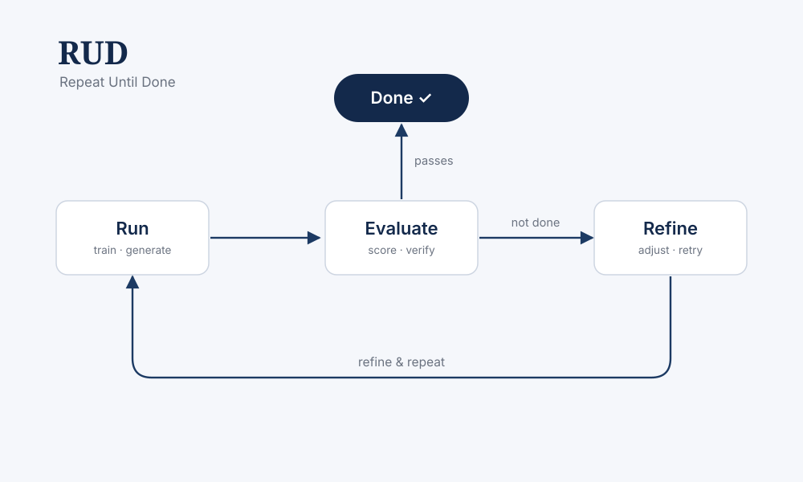

RUD: Repeat Until Done

RUD (Repeat Until Done) is a lightweight framework that wraps any ML job in an automatic run → evaluate → refine loop: it runs a task, evaluates the result against a success criterion, and then refines and re-runs until the criterion is met or a budget is exhausted. It makes flaky pipelines, agentic/LLM workflows, and large experiment sweeps robust and reproducible — turning "try again until it works" into a principled, configurable loop.
Highlights- Pluggable evaluators and stopping criteria — score, verify, or test against any metric.
- Automatic retry & refine with configurable budgets, backoff, and checkpointing.
- Works with arbitrary commands and Python callables; logs every attempt for reproducibility.